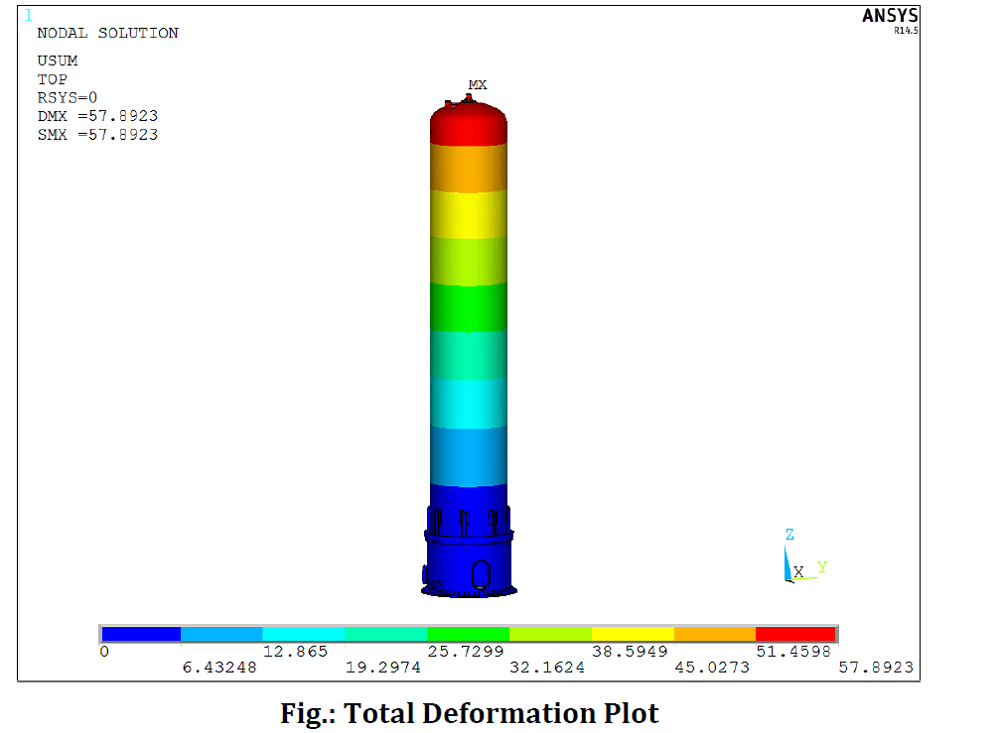
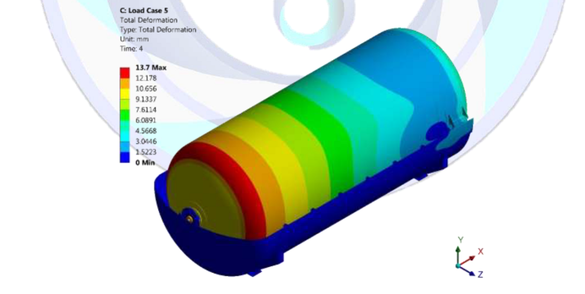

BG(Cryo)’s committed team is a rich mix of experience, technically up to date and raw talent. Team has very
strong
engineering background and specialized skills acquired over years of experience and training.
Design Capabilities:
BG(Cryo) has its own fully equipped Design & Development department with qualified and experienced design
professionals.
Capabilities include Design,development and detailed engineering of :
-
Cryogenic storage and transport vessels confirming to ASME,EN,ADM,BS,IS codes and SMPV rules.
- Thermal design and analysis of Cryogenic vessels
- Unfired Pressure vessels /Reactors confirming to ASME code and SMPV rules
- Petroleum product storage tanks confirming to API stds
- Lube equipments/Grease kettles
- Aviation fuel handling equipments Viz, Double walled containerised
tanks,Refuellers,Dispensers etc.
- Piping design and analysis.
Software/Design Tools available:
- PV Elite
- Caeser piping design and analysis
- Auto CAD
- FE analysis
- Thermal design tools developed in house
- 3-D modelling
Manufacturing Capabilities:
BG(Cryo) is blessed with fully committed, adaptable,highly motivated and skilled work force ably guided by
qualified
and experienced technical professionals . Innovative and effective approach has been hall mark of team’s
success.
Manufacturing capabilities include
Welding:
- Third party (LRIS,BVQI,TUV,DNV) qualified welders
- TIG,MIG,SAW & SMAW processes
- Stainless steel ,Carbon steel,Alloy steel and Aluminum material
- Qualified weld processes for both Auto and manual welding upto 40 mm thk
BG(Cryo) is one of the largest Aluminum welders in the country.
Plate Bending/Rolling:
- Upto 40 mm thk, 3 M wide both SS and CS
Dishing:
- Upto 5 Mtr dia, 40 mm thk
Piping:
Plasma cutting:
Material Handling:
- Over head lift- in house upto 30 MT
- Assisted lift upto 50 MT
- Under hook height 12 Mtr
MLSI Insulation:
- Upto 2.5 Mtr dia, 10 Mtr length, 15 MT weight
Perlite filling:
Evacuation/Vacuumising:
- Upto 1x10e-3 mbar, annular volumes upto 100 KL
NDT Test:
- Radiographic testing(X- ray /Gamma ray)
- Liquid penetrant testing
- Magnetic particle testing
- Ultrasonic testing
- Mass Spectro Meter helium leak testing(MSLD)
- Hydrostatic testing
- Positive Material Identification
BG(Cryo) has a pool of RT-II qualified engineers.
Surface preparation/Shot blasting and Painting:
Expertise
- Design, development, manufacturing, testing and supply of Cryogenic Systems.
- Design, development, manufacturing, testing and supply of Vacuum Systems.
- Special applications and projects involving application of vacuum and
cryogenics.
- Insulation of Vessels and equipment with Perlite powder or multilayer super
insulation with high vacuum.
- Design, fabrication, erection & commissioning of super insulated pipelines
(both rigid as well as flexible) for
various liquids.
- Consultancy in selection as well as turnkey project execution for liquid
gases storage, gasification, pressurization
and filling of cylinders or input to processes.
- Design, development, manufacturing, testing and supply of Pressure Vessels
for applications in Refinery,
Petrochemicals and other process industry.

